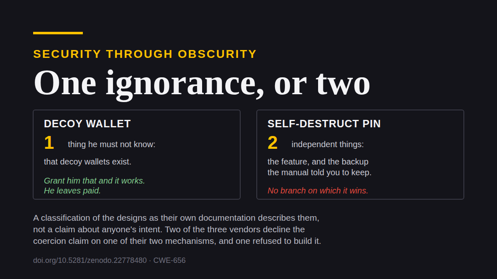

Quem já sentou numa disciplina de projeto de protocolos viu o princípio de Kerckhoffs lá pela segunda semana. É o que todo mundo sabe recitar. E esta comunidade, que discute seis horas se o RNG de uma carteira é confiável, entrega defesas contra coação física construídas em cima de segurança por obscuridade, e elas falham na primeira página do manual.
Nada sutil. Os próprios manuais dizem isso, e este texto é quase só citá-los.
O que Kerckhoffs realmente diz
Deixe o jargão de lado. Um sistema tem que continuar seguro quando o atacante sabe exatamente como ele funciona. Tudo menos a chave é público: o projeto, o software, o procedimento, o fato de o procedimento existir. Você julga um projeto pelo desempenho dele contra alguém que leu a mesma documentação que você.
Isso não é pessimismo sobre atacantes. É uma admissão sobre publicação. No momento em que uma defesa chega ao consumidor, a descrição dela está num artigo de suporte, na língua do atacante, indexada, de graça.
Segurança por obscuridade tem número de catálogo
A família de táticas que quebra essa regra tem nome e número de arquivo. Reliance on Security Through Obscurity, catalogada como CWE-656. Em qualquer outro domínio de software essa entrada é um defeito que se conserta. Na custódia de bitcoin é a recomendação consensual.
E esse paradigma, que o projeto de protocolos chama de obscuridade, é intrinsecamente condescendente. Ele supõe que o ladrão não tem capacidade mental de ler os mesmos manuais, assistir aos mesmos tutoriais e fazer os mesmos cursos que as vítimas dele. Se dá para aprender um procedimento na internet, um ladrão também aprende, e com certeza vai saber que o procedimento existe.
Mire na suposição, não em quem a carrega. As pessoas que entregam essas funções são engenheiros cuidadosos que erraram uma premissa. Acontece que é a premissa que sustenta o resto.
Três apostas no que o atacante vai acreditar
O conselho padrão vem em três partes: guarde em silêncio, negue se perguntarem, mantenha algo pequeno para entregar. Reescreva sem o tom tranquilizador e são três apostas sobre o estado mental de um adversário. Não três controles. Três palpites sobre o que outra pessoa vai pensar, feitos por quem tem menos condições de conferir.
Um controle funciona quando o atacante sabe dele. É essa a distinção inteira, e todo mecanismo abaixo falha desse lado dela.
A classe, nas palavras dos próprios fabricantes
Vou citar documentação em vez de caracterizá-la, porque a classificação faz o trabalho sozinha e caracterizar convida uma discussão sobre intenção de que ninguém precisa.
O PIN que apaga, e o backup que ele pressupõe
A Jade, da Blockstream, tem um PIN alternativo que, nas palavras da central de ajuda, "automatically delete[s] the encrypted wallet information from Jade if entered". Ele é apresentado como "especially useful in the event of a physical threat, as you can provide this PIN to an attacker". Digite e o aparelho informa só "Internal Error", então o apagamento se lê como defeito, não como decisão.
Crédito onde é devido: o apagamento em si é real, instantâneo e não dá para interromper. Não existe corrida a vencer.
Agora leia o aviso seguinte na mesma página. Depois disso "there is no way to regain access to your funds except by restoring using your recovery phrase", então o titular deve "make sure you have a backup before proceeding".
A função pressupõe um backup. Quem segue a documentação tem um; quem não segue destruiu as próprias economias sob pressão. Ou seja, o que o apagamento remove não é o segredo. Ele remove o caminho do aparelho até o segredo, e deixa de pé o caminho que passa pela memória da pessoa sobre onde está o backup.
O apagamento apaga a rota que não exigia machucar ninguém, e mantém a que exige.
A Coldcard documenta a regressão
Você não precisa deduzir o passo seguinte. Um fabricante publicou.
A Coldcard tem PINs de truque, entre eles uma carteira de coação descrita como "a personal safety feature… If you must reveal a PIN under duress, give the duress PIN instead of your Main PIN". Lógica de isca comum. A documentação do firmware então considera o que acontece quando a isca não é acreditada, e o conselho é escalar: "you may be asked what the actual duress PIN is, while under duress. We suggest providing the 'brickme' PIN in that case."
Isso é um fabricante contemplando um atacante que sabe que iscas existem, e recomendando um apagamento irreversível feito com a vítima ainda na sala, ainda respirando, ainda disponível para ser perguntada onde está o backup.
Mais duas admissões na mesma página merecem citação porque fabricante raramente faz. A primeira concede que a isca é distinguível: "if you are somehow facing an attacker who is willing to verify he has the real main PIN, it's possible that careful analysis of system responses will imply he's working with the duress PIN." O remédio oferecido não é um conserto. É um pedido: "if you discover any sequences that reveal this easily, please tell us and we'll see if we can cover them up better."
Segurança por obscuridade declarada como programa de manutenção. O que está sendo defendido não é que a isca seja indistinguível, e sim que ninguém publicou ainda como distingui-la. Um esquema cuja segurança é o estado atual da fila de divulgação é um esquema que você não pode invocar na sala, porque não faz ideia do que o homem na sua frente leu.
A segunda admissão é a negativa em si, oferecida para quando brickar é indigesto: "alternatively, you can say you set the duress PIN once, but have since forgotten it."
Você não consegue provar que esqueceu. É o paper companheiro inteiro em cinco palavras, e aqui está ele como orientação publicada. O fabricante enumerou os ramos e achou um blefe em cada um.
O que cada fabricante realmente afirma
Isso importa, e é onde a maior parte das críticas desse tipo erra. As três empresas não fazem as mesmas afirmações, e um fabricante que entrega um mecanismo sem afirmar que ele derrota coação não cometeu o erro de que este texto trata.
A Blockstream vende o apagamento para ameaça física, e não afirma nada parecido para as carteiras com passphrase. O enquadramento de coação das iscas por passphrase é invenção da comunidade, não do fabricante. A Coldcard vende as duas metades. A Trezor é a imagem espelhada da Blockstream: as carteiras com passphrase dela são vendidas como negabilidade, enquanto o wipe code, que a própria fabricante chama de PIN de "self-destruct" e que apaga a semente de recuperação, está documentado sem nenhuma menção a coação, coerção ou ameaça física.
A Trezor também é a que foi procurada, em janeiro de 2022, para tornar o wipe disfarçável: uma mensagem definida pelo usuário na entrada, para que o apagamento passasse por falha de hardware. O pedido foi fechado como not planned. O aparelho continua anunciando o wipe abertamente.
Essa recusa é o documento mais interessante de toda a classe. Ela mostra que o disfarce de "Internal Error" não é intrínseco ao apagamento. É uma escolha de apresentação: um fabricante construiu, outro foi procurado diretamente e declinou.
Uma ignorância, ou duas
Existe um jeito limpo de ordenar isso, e não é por quão provável é que o atacante seja ignorante. É por quantas coisas separadas ele precisa ignorar.
Uma isca precisa de uma. Ele não pode saber que iscas existem. Conceda isso e a isca funciona de verdade: ele vai embora com um saldo plausível e uma história que fecha.
Um autodestruidor precisa de duas, e elas são independentes. Ele não pode saber que a função existe, para que a falha se leia como defeito. E ele não pode raciocinar até o backup, que o manual mandou o titular guardar. A segunda não decorre da primeira. "Este aparelho está quebrado" nunca implicou "esta pessoa não tem bitcoin". Implica que o instrumento quebrou, e a pergunta natural seguinte é onde você guarda o backup, feita a alguém que continua ali de pé.
Então contra um atacante informado o autodestruidor falha pela razão Kerckhoffsiana comum, e contra um ignorante ele falha do mesmo jeito, porque a crença que ele fabrica não encerra o encontro. É o único esquema obscuro que não tem ramo em que vença.

Existe uma versão mais silenciosa da mesma falha. O FAQ do Sparrow documenta uma opção para guardar os dados da carteira em mídia removível, observando que ela "allows you to store all Sparrow data on removable media making for more plausible deniability". A própria página de boas práticas do Sparrow mantém as palavras da semente guardadas em separado, "ideally in a different location". Então o atacante coage o backup da semente, carrega num carteira dele, e nunca encosta na mídia escondida. Uma isca pelo menos fica entre ele e as moedas. Essa aqui não fica nem perto delas, e o que ela acrescenta é a confiança de fazer uma negativa.
Oitenta e oito pessoas, doze casos
A classe supõe um adversário que os autos dizem não existir.
A promotoria francesa denunciou 88 pessoas em cerca de uma dúzia de casos de sequestro e extorsão ligados a cripto, o que é uma contagem num instante de uma série de processos em curso, e não um total fechado. A contagem da CertiK para o primeiro semestre de 2026 tem invasões domiciliares indo de 1 para 20 em 52 incidentes na comparação anual, o que é a amostra semestral de uma empresa e não o registro público, então leia a direção e não a casa decimal.
Onde quer que os números exatos parem, eles descrevem quadrilhas organizadas com reconhecimento e seleção de vítimas rodando em cima de bancos de dados vazados. Não oportunistas incapazes de ler uma página de suporte na língua em que ela foi escrita.
O tiro pela culatra
Segurança por obscuridade não é só ineficaz. Vendida em escala, ela se autodestrói, e quem mais se machuca nunca comprou nada.
A isca não é só uma prática tolerada. É produto e é currículo. Uma consultoria de autocustódia em espanhol lista entre os planos pagos "Passphrase (tu bóveda señuelo) — Billetera señuelo + billetera real. Protección ante coacción/coerción": uma carteira isca vendida, com todas as letras, como proteção contra coação. Guias publicados treinam a encenação. Um deles manda o titular manter um saldo pequeno na semente nua como o que você entregaria sob coação física, acrescentando que "para isso funcionar, o saldo isca precisa ser crível — o bastante para parecer uma carteira de verdade, não o bastante para te arrasar se for perdido".
Leia isso como objetivo de treinamento e o problema aparece. Uma isca só precisa ser crível para um atacante que possa não acreditar nela, e o conselho fica quieto sobre o que acontece quando ele não acredita, que é a pergunta inteira. Segurança por obscuridade está sendo vendida aqui como se fosse um controle, precificada e ensinada.
A negativa é um bem comum, e está sendo drenada
Treinamento divulgado aumenta a probabilidade a priori de que uma negativa fluente tenha sido ensaiada. Quando o atacante sabe que credibilidade é ensinada e vendida, fluência deixa de ser evidência de verdade e passa a ser evidência de treino. O remédio degrada aquilo que ele vende.
E degrada para todo mundo. Quem nunca treinou, quem está falando a verdade nua, agora nega para um atacante que desconta negativas fluentes em geral. Quem não tem bitcoin nenhum também. O desenvolvimento completo disso está em The Denial Spiral, e é a razão de esta série tratar obscuridade como problema de saúde pública, e não como problema pessoal.
Esconder precisa de algum lugar onde se esconder. O que um titular discreto tem para sumir dentro é a multidão enorme de pessoas que visivelmente não têm bitcoin, e isso só funciona enquanto a multidão for majoritariamente genuína. Treine gente suficiente para se apresentar como comum e comum deixa de carregar informação, porque o atacante não está mais separando quem tem de quem não tem. Se todo mundo é agulha, não existe palheiro.
Estrutural, não medido. Ninguém contou quantos titulares praticam discrição, e pelo mecanismo 1 ninguém pode: obscuridade não se anuncia. A afirmação é sobre o que acontece com a multidão conforme o treinamento se espalha, não sobre onde a multidão está hoje.
Um projeto público torna uma negativa comum mais crível
Uma última inversão, e é a parte que eu acho genuinamente surpreendente.
Uma defesa obscura pede ao atacante que acredite numa afirmação, contra o incentivo dele de não acreditar e sem jeito nenhum de nenhum dos dois resolver a questão. Um projeto publicamente especificado muda quanto custa fazer essa afirmação. Um atacante que dá crédito à existência de mecanismos eficazes em circulação está dando crédito a que mentir não é a única ferramenta disponível para a vítima, e um titular com alternativas reais tem menos motivo para recorrer à mentira.
Então um projeto limpo do ponto de vista de Kerckhoffs melhora a posição exatamente daquelas negativas obscuras que ele foi construído para tornar desnecessárias. Segurança por obscuridade continua insustentável como defesa primária. Ela não é indiferente a qual projeto acompanha.
A classificação, a documentação dos fabricantes e o argumento do bem comum estão desenvolvidos em The Denial Spiral, acesso aberto, sem cadastro. O companheiro dele, The Deadly Race, trata do que acontece depois que o atacante já está na sala: uma apreensão que deixa um caminho viável porém não concluído transforma um roubo numa corrida, e precifica a sua eliminação.
Toda citação de fabricante acima vem de documentação pública, linkada no paper. Se eu li errado alguma função, ou se uma página mudou, me avise que eu corrijo em público.
Se isso valeu seu tempo. Mande para alguém que entrega um PIN de coação. Uma ⭐ no Great Wall, na pesquisa ou nestes textos não custa nada e faz o trabalho ser encontrado. E se você quiser financiá-lo, o apoio aceita ⚡ Lightning e on-chain, sem cadastro, sem níveis e sem contrapartida nenhuma.